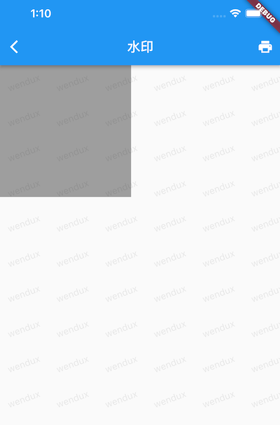

8.3 Flutter事件机制
8.3.1 Flutter 事件处理流程
Flutter 事件处理流程主要分两步，为了聚焦核心流程，我们以用户触摸事件为例来说明：
- 命中测试：当手指按下时，触发 PointerDownEvent 事件，按照深度优先遍历当前渲染（render object）树，对每一个渲染对象进行“命中测试”（hit test），如果命中测试通过，则该渲染对象会被添加到一个 HitTestResult 列表当中。
- 事件分发：命中测试完毕后，会遍历 HitTestResult 列表，调用每一个渲染对象的事件处理方法（handleEvent）来处理 PointerDownEvent 事件，该过程称为“事件分发”（event dispatch）。随后当手指移动时，便会分发 PointerMoveEvent 事件。
- 事件清理：当手指抬（ PointerUpEvent ）起或事件取消时（PointerCancelEvent），会先对相应的事件进行分发，分发完毕后会清空 HitTestResult 列表。
需要注意：
- 命中测试是在 PointerDownEvent 事件触发时进行的，一个完成的事件流是 down > move > up (cancle)。
- 如果父子组件都监听了同一个事件，则子组件会比父组件先响应事件。这是因为命中测试过程是按照深度优先规则遍历的，所以子渲染对象会比父渲染对象先加入 HitTestResult 列表，又因为在事件分发时是从前到后遍历 HitTestResult 列表的，所以子组件比父组件会更先被调用 handleEvent 。
下面我们从代码层面看一些整个事件处理流程：
// 触发新事件时，flutter 会调用此方法
void _handlePointerEventImmediately(PointerEvent event) {
HitTestResult? hitTestResult;
if (event is PointerDownEvent ) {
hitTestResult = HitTestResult();
// 发起命中测试
hitTest(hitTestResult, event.position);
if (event is PointerDownEvent) {
_hitTests[event.pointer] = hitTestResult;
}
} else if (event is PointerUpEvent || event is PointerCancelEvent) {
//获取命中测试的结果，然后移除它
hitTestResult = _hitTests.remove(event.pointer);
} else if (event.down) { // PointerMoveEvent
//直接获取命中测试的结果
hitTestResult = _hitTests[event.pointer];
}
// 事件分发
if (hitTestResult != null) {
dispatchEvent(event, hitTestResult);
}
}
上面代码只是核心代码，完整的代码位于GestureBinding 实现中。下面我们分别来介绍一些命中测试和事件分发过程。
8.3.2 命中测试详解
1. 命中测试的起点
一个对象是否可以响应事件，取决于在其对命中测试过程中是否被添加到了 HitTestResult 列表 ，如果没有被添加进去，则后续的事件分发将不会分发给自己。下面我们看一下命中测试的过程：当发生用户事件时，Flutter 会从根节点（RenderView）开始调用它hitTest() 。
@override
void hitTest(HitTestResult result, Offset position) {
//从根节点开始进行命中测试
renderView.hitTest(result, position: position);
// 会调用 GestureBinding 中的 hitTest()方法，我们将在下一节中介绍。
super.hitTest(result, position);
}
上面代码位于 RenderBinding 中，核心代码只有两行，整体是命中测试分两步，我们来解释一下：
第一步： renderView 是 RenderView 对应的 RenderObject 对象， RenderObject 对象的 hitTest 方法主要功能是：从该节点出发，按照深度优先的顺序递归遍历子树（渲染树）上的每一个节点并对它们进行命中测试。这个过程称为“渲染树命中测试”。
注意，为了表述方便，“渲染树命中测试”，也可以表述为组件树或节点树命中测试，只是我们需要知道，命中测试的逻辑都在 RenderObject 中，而并非在 Widget或 Element 中。
第二步：渲染树命中测试完毕后，会调用 GestureBinding 的 hitTest 方法，该方法主要用于处理手势，我们会在后面介绍。
2. 渲染树命中测试过程
渲染树的命中测试流程就是父节点 hitTest 方法中不断调用子节点 hitTest 方法的递归过程。下面是RenderView的hitTest()源码：
// 发起命中测试，position 为事件触发的坐标（如果有的话）。
bool hitTest(HitTestResult result, { Offset position }) {
if (child != null)
child.hitTest(result, position: position); //递归对子树进行命中测试
//根节点会始终被添加到HitTestResult列表中
result.add(HitTestEntry(this));
return true;
}
因为 RenderView 只有一个孩子，所以直接调用child.hitTest 即可。如果一个渲染对象有多个子节点，则命中测试逻辑为：如果任意一个子节点通过了命中测试或者当前节点“强行声明”自己通过了命中测试，则当前节点会通过命中测试。我们以RenderBox为例，看看它的hitTest()实现：
bool hitTest(HitTestResult result, { @required Offset position }) {
...
if (_size.contains(position)) { // 判断事件的触发位置是否位于组件范围内
if (hitTestChildren(result, position: position) || hitTestSelf(position)) {
result.add(BoxHitTestEntry(this, position));
return true;
}
}
return false;
}
上面代码中:
hitTestChildren()功能是判断是否有子节点通过了命中测试，如果有，则会将子组件添加到 HitTestResult 中同时返回 true；如果没有则直接返回false。该方法中会递归调用子组件的 hitTest 方法。hitTestSelf()决定自身是否通过命中测试，如果节点需要确保自身一定能响应事件可以重写此函数并返回true ，相当于“强行声明”自己通过了命中测试。
需要注意，节点通过命中测试的标志是它被添加到 HitTestResult 列表中，而不是它 hitTest 的返回值，虽然大所数情况下节点通过命中测试就会返回 true，但是由于开发者在自定义组件时是可以重写 hitTest 的，所以有可能会在在通过命中测试时返回 false，或者未通过命中测试时返回 true，当然这样做并不好，我们在自定义组件时应该尽可能避免，但是在有些需要自定义命中测试流程的场景下可能就需要打破这种默契，比如我们将在本节后面实现的 HitTestBlocker 组件。
所以整体逻辑就是：
- 先判断事件的触发位置是否位于组件范围内，如果不是则不会通过命中测试，此时 hitTest 返回 false，如果是则到第二步。
- 会先调用
hitTestChildren()判断是否有子节点通过命中测试，如果是，则将当前节点添加到 HitTestResult 列表，此时 hitTest 返回 true。即只要有子节点通过了命中测试，那么它的父节点（当前节点）也会通过命中测试。 - 如果没有子节点通过命中测试，则会取 hitTestSelf 方法的返回值，如果返回值为 true，则当前节点通过命中测试，反之则否。
如果当前节点有子节点通过了命中测试或者当前节点自己通过了命中测试，则将当前节点添加到 HitTestResult 中。又因为 hitTestChildren() 中会递归调用子组件的 hitTest 方法，所以组件树的命中测试顺序深度优先的，即如果通过命中测试，子组件会比父组件会先被加入HitTestResult 中。
我们看看这两个方法默认实现如下：
@protected
bool hitTestChildren(HitTestResult result, { Offset position }) => false;
@protected
bool hitTestSelf(Offset position) => false;
如果组件包含多个子组件，就必须重写 hitTestChildren() 方法，该方法中应该调用每一个子组件的 hitTest 方法，比如我们看看 RenderBoxContainerDefaultsMixin 中的实现：
// 子类的 hitTestChildren() 中会直接调用此方法
bool defaultHitTestChildren(BoxHitTestResult result, { required Offset position }) {
// 遍历所有子组件(子节点从后向前遍历)
ChildType? child = lastChild;
while (child != null) {
final ParentDataType childParentData = child.parentData! as ParentDataType;
// isHit 为当前子节点调用hitTest() 的返回值
final bool isHit = result.addWithPaintOffset(
offset: childParentData.offset,
position: position,
//调用子组件的 hitTest方法，
hitTest: (BoxHitTestResult result, Offset? transformed) {
return child!.hitTest(result, position: transformed!);
},
);
// 一旦有一个子节点的 hitTest() 方法返回 true，则终止遍历，直接返回true
if (isHit) return true;
child = childParentData.previousSibling;
}
return false;
}
bool addWithPaintOffset({
required Offset? offset,
required Offset position,
required BoxHitTest hitTest,
}) {
...// 省略无关代码
final bool isHit = hitTest(this, transformedPosition);
return isHit; // 返回 hitTest 的执行结果
}
我们可以看到上面代码的主要逻辑是遍历调用子组件的 hitTest() 方法，同时提供了一种中断机制：即遍历过程中只要有子节点的 hitTest() 返回了 true 时：
- 会终止子节点遍历，这意味着该子节点前面的兄弟节点将没有机会通过命中测试。注意，兄弟节点的遍历倒序的。
- 父节点也会通过命中测试。因为子节点 hitTest() 返回了 true 导父节点 hitTestChildren 也会返回 true，最终会导致 父节点的 hitTest 返回 true，父节点被添加到 HitTestResult 中。
当子节点的 hitTest() 返回了 false 时，继续遍历该子节点前面的兄弟节点，对它们进行命中测试，如果所有子节点都返回 false 时，则父节点会调用自身的 hitTestSelf 方法，如果该方法也返回 false，则父节点就会被认为没有通过命中测试。
下面思考两个问题：
- 为什么要制定这个中断呢？因为一般情况下兄弟节点占用的布局空间是不重合的，因此当用户点击的坐标位置只会有一个节点，所以一旦找到它后（通过了命中测试，hitTest 返回true），就没有必要再判断其他兄弟节点了。但是也有例外情况，比如在 Stack 布局中，兄弟组件的布局空间会重叠，如果我们想让位于底部的组件也能响应事件，就得有一种机制，能让我们确保：即使找到了一个节点，也不应该终止遍历，也就是说所有的子组件的 hitTest 方法都必须返回 false！为此，Flutter 中通过 HitTestBehavior 来定制这个过程，这个我们会在本节后面介绍。
- 为什么兄弟节点的遍历要倒序？同 1 中所述，兄弟节点一般不会重叠，而一旦发生重叠的话，往往是后面的组件会在前面组件之上，点击时应该是后面的组件会响应事件，而前面被遮住的组件不能响应，所以命中测试应该优先对后面的节点进行测试，因为一旦通过测试，就不会再继续遍历了。如果我们按照正向遍历，则会出现被遮住的组件能响应事件，而位于上面的组件反而不能，这明显不符合预期。
我们回到 hitTestChildren 上，如果不重写 hitTestChildren，则默认直接返回 false，这也就意味着后代节点将无法参与命中测试，相当于事件被拦截了，这也正是 IgnorePointer 和 AbsorbPointer 可以拦截事件下发的原理。
如果 hitTestSelf 返回 true，则无论子节点中是否有通过命中测试的节点，当前节点自身都会被添加到 HitTestResult 中。而 IgnorePointer 和 AbsorbPointer 的区别就是，前者的 hitTestSelf 返回了 false，而后者返回了 true。
命中测试完成后，所有通过命中测试的节点都被添加到了 HitTestResult 中。
8.3.4 事件分发
事件分发过程很简单，即遍历HitTestResult，调用每一个节点的 handleEvent 方法：
// 事件分发
void dispatchEvent(PointerEvent event, HitTestResult? hitTestResult) {
...
for (final HitTestEntry entry in hitTestResult.path) {
entry.target.handleEvent(event.transformed(entry.transform), entry);
}
}
所以组件只需要重写 handleEvent 方法就可以处理事件了。
8.3.5 HitTestBehavior
1. HitTestBehavior简介
我们先来实现一个能够监听 PointerDownEvent 的组件：
class PointerDownListener extends SingleChildRenderObjectWidget {
PointerDownListener({Key? key, this.onPointerDown, Widget? child})
: super(key: key, child: child);
final PointerDownEventListener? onPointerDown;
@override
RenderObject createRenderObject(BuildContext context) =>
RenderPointerDownListener()..onPointerDown = onPointerDown;
@override
void updateRenderObject(
BuildContext context, RenderPointerDownListener renderObject) {
renderObject.onPointerDown = onPointerDown;
}
}
class RenderPointerDownListener extends RenderProxyBox {
PointerDownEventListener? onPointerDown;
@override
bool hitTestSelf(Offset position) => true; //始终通过命中测试
@override
void handleEvent(PointerEvent event, covariant HitTestEntry entry) {
//事件分发时处理事件
if (event is PointerDownEvent) onPointerDown?.call(event);
}
}
因为我们让 hitTestSelf 的返回值始终为 true，所以无论子节点是否通过命中测试，PointerDownListener 都会通过，所以后续分发事件时 handleEvent 就会被调用，我们在里面判断事件类型为 PointerDownEvent 时触发回调即可，测试代码如下：
class PointerDownListenerRoute extends StatelessWidget {
const PointerDownListenerRoute({Key? key}) : super(key: key);
@override
Widget build(BuildContext context) {
return PointerDownListener(
child: Text('Click me'),
onPointerDown: (e) => print('down'),
);
}
}
点击文本后控制台就会打印 'down'。
Listener 的实现和 PointerDownListener 的实现原理差不多，有两点不同：
- Listener 监听的事件类型更多一些。
- Listener的 hitTestSelf 并不是一直返回 true。
这里需要重点说一下第二点。 Listener 组件有一个 behavior 参数，我们之前并没有介绍，下面我们仔细介绍一下。通过查看 Listener 源码，发现它的渲染对象 RenderPointerListener 继承了 RenderProxyBoxWithHitTestBehavior 类：
abstract class RenderProxyBoxWithHitTestBehavior extends RenderProxyBox {
//[behavior] 的默认值为 [HitTestBehavior.deferToChild].
RenderProxyBoxWithHitTestBehavior({
this.behavior = HitTestBehavior.deferToChild,
RenderBox? child,
}) : super(child);
HitTestBehavior behavior;
@override
bool hitTest(BoxHitTestResult result, { required Offset position }) {
bool hitTarget = false;
if (size.contains(position)) {
hitTarget = hitTestChildren(result, position: position) || hitTestSelf(position);
if (hitTarget || behavior == HitTestBehavior.translucent) //1
result.add(BoxHitTestEntry(this, position)); // 通过命中测试
}
return hitTarget;
}
@override
bool hitTestSelf(Offset position) => behavior == HitTestBehavior.opaque; //2
}
我们看到 behavior 在 hitTest 和 hitTestSelf 中会使用，它的取值会影响 Listener 的命中测试结果。我们先看看 behavior 都有哪些取值：
//在命中测试过程中 Listener 组件如何表现。
enum HitTestBehavior {
// 组件是否通过命中测试取决于子组件是否通过命中测试
deferToChild,
// 组件必然会通过命中测试，同时其 hitTest 返回值始终为 true
opaque,
// 组件必然会通过命中测试，但其 hitTest 返回值可能为 true 也可能为 false
translucent,
}
它有三个取值，我们结合 hitTest 实现来分析一下不同取值的作用：
- behavior 为 deferToChild 时，hitTestSelf 返回 false，当前组件是否能通过命中测试完全取决于 hitTestChildren 的返回值。也就是说只要有一个子节点通过命中测试，则当前组件便会通过命中测试。
- behavior 为 opaque 时，hitTestSelf 返回 true，hitTarget 值始终为 true，当前组件通过命中测试。
- behavior 为 translucent 时，hitTestSelf 返回 false，hitTarget 值此时取决于 hitTestChildren 的返回值，但是无论 hitTarget 值是什么，当前节点都会被添加到 HitTestResult 中。
注意，behavior 为 opaque 和 translucent 时当前组件都会通过命中测试，它们的区别是 hitTest() 的返回值（hitTarget ）可能不同，所以它们的区别就看 hitTest() 的返回值会影响什么，这个我们已经在上面详细介绍过了，下面我们通过一个实例来理解一下。
2. 实例：实现 App 水印
效果如图8-6所示：

实现思路是，在页面的最顶层覆盖一个水印遮罩，我们可以通过 Stack 来实现，将水印组件作为最后一个孩子传给Stack：
class WaterMaskTest extends StatelessWidget {
const WaterMaskTest({Key? key}) : super(key: key);
@override
Widget build(BuildContext context) {
return Stack(
children: [
wChild(1, Colors.white, 200),
WaterMark(
painter: TextWaterMarkPainter(text: 'wendux', rotate: -20),
),
],
);
}
Widget wChild(int index, color, double size) {
return Listener(
onPointerDown: (e) => print(index),
child: Container(
width: size,
height: size,
color: Colors.grey,
),
);
}
}
WaterMark 是实现水印的组件，具体逻辑我们将在后面自定义组件一章中介绍，现在只需知道 WaterMark 中使用了 DecoratedBox。效果是实现了，但是我们点击 Stack 的第一个子组件（灰色矩形区域）时发现控制台没有任何输出，这是不符合预期的，原因是水印组件在最顶层，事件被它 “拦住了”，我们分析一下这个过程：
- 点击时，Stack 有两个子组件，这是会先对第二个子组件（水印组件）进行点击测试，由于水印组件中使用了 DecoratedBox，查看源码后发现如果用户点击位置在 DecoratedBox上，它的 hitTestSelf 就会返回 true，所以水印组件通过命中测试。
- 水印组件通过命中测试后就会导致 Stack 的 hitTestChildren() 直接返回（终止遍历其他子节点），所以 Stack 的第一个子组件将不会参与命中测试，因此也就不会响应事件。
原因找到了，解决的方法就是想办法让第一个子组件也能参与命中测试，这样的话，我们就得想办法让第二个子组件的 hitTest 返回 false 即可。因此我们可以用 IgnorePointer 包裹一下 WaterMask即可。
IgnorePointer(child: WaterMark(...))
修改后，重新运行，发现第一个子组件可以响应事件了。
如果我们想让 Stack 的所有子组件都响应事件，应该如何实现呢？当然，这很可能是一个伪需求，现实的场景中几乎不会遇到，但考虑这个问题可以加深我们对 Flutter 事件处理流程的理解。
class StackEventTest extends StatelessWidget {
const StackEventTest({Key? key}) : super(key: key);
@override
Widget build(BuildContext context) {
return Stack(
children: [
wChild(1),
wChild(2),
],
);
}
Widget wChild(int index) {
return Listener(
onPointerDown: (e) => print(index),
child: Container(
width: 100,
height: 100,
color: Colors.grey,
),
);
}
}
运行后，点击灰色框，读者猜猜控制台会打印什么？
答案是只会打印一个 '2'，原因是，Stack 先遍历第二个子节点 Listener ，因为 Container 的 hitTest 会返回 true（ 实际上 Container 是一个组合组件，本示例中，Container最终会生成一个ColoredBox，而参与命中测试的是ColoredBox对应的 RenderObject），所以 Listener 的 hitTestChildren 会返回 true，最终 Listener 的hitTest 也会返回true，所以第一个子节点将不会收到事件。
那如果我们将 Listener 的 behavior 属性指定为 opaque 或 translucent 呢？其实结果还是一样的，因为只要 Container 的 hitTest 会返回 true， 最终Listener 的 hitTestChildren 就会返回 true，第一个节点就不会再进行命中测试。 那 opaque 和 translucent 能体现出差异的具体场景有什么呢？理论上只有 Listener 的子节点 hitTest 返回 false 时两者才有区别，但是 Flutter 中有UI 的组件都会在用户点击到它之上时，它的hitTest基本都会返回 true ，因此很难找到具体场景，但是为了测试它们的区别，我们可以强行制造一个场景，比如下面代码：
class HitTestBehaviorTest extends StatelessWidget {
const HitTestBehaviorTest({Key? key}) : super(key: key);
@override
Widget build(BuildContext context) {
return Stack(
children: [
wChild(1),
wChild(2),
],
);
}
Widget wChild(int index) {
return Listener(
//behavior: HitTestBehavior.opaque, // 放开此行，点击只会输出 2
behavior: HitTestBehavior.translucent, // 放开此行，点击会同时输出 2 和 1
onPointerDown: (e) => print(index),
child: SizedBox.expand(),
);
}
}
SizedBox 没有子元素，当它被点击时，它的 hitTest 就会返回 false，此时 Listener 的 behavior 设置为 opaque 和translucent 就会有区别（见注释）。
因为实际场景中几乎不会出现上面这样的类似的 case，所以如果想让 Stack 的所有子组件都响应事件就必须保证 Stack 的所有孩子的 hitTest 返回 false ，虽然用 IgnorePointer 包裹所有子组件就可以做到这一点，但是 IgnorePointer 也同时不会再对子组件进行命中测试，这意味着它的子组件树也将不能响应事件，比如下面的代码运行后，点击灰色区域将不会有任何输出：
class AllChildrenCanResponseEvent extends StatelessWidget {
const AllChildrenCanResponseEvent({Key? key}) : super(key: key);
@override
Widget build(BuildContext context) {
return Stack(
children: [
IgnorePointer(child: wChild(1, 200)),
IgnorePointer(child: wChild(2, 200)),
],
);
}
Widget wChild(int index, double size) {
return Listener(
onPointerDown: (e) => print(index),
child: Container(
width: size,
height: size,
color: Colors.grey,
),
);
}
}
虽然我们在子节点中通过监听了 Container 的事件，但是子节点是在 IgnorePointer 中的，所以子节点是没有机会参与命中测试的，所以不会响应任何事件。看来没有现成的组件可以满足要求，那我们就自己动手实现一个组件然后来定制它的 hitTest 来满足我们的要求即可。
3. HitTestBlocker
下面我们定义一个可以拦截 hitTest 各个过程的 HitTestBlocker 组件。
class HitTestBlocker extends SingleChildRenderObjectWidget {
HitTestBlocker({
Key? key,
this.up = true,
this.down = false,
this.self = false,
Widget? child,
}) : super(key: key, child: child);
/// up 为 true 时 , `hitTest()` 将会一直返回 false.
final bool up;
/// down 为 true 时, 将不会调用 `hitTestChildren()`.
final bool down;
/// `hitTestSelf` 的返回值
final bool self;
@override
RenderObject createRenderObject(BuildContext context) {
return RenderHitTestBlocker(up: up, down: down, self: self);
}
@override
void updateRenderObject(
BuildContext context, RenderHitTestBlocker renderObject) {
renderObject
..up = up
..down = down
..self = self;
}
}
class RenderHitTestBlocker extends RenderProxyBox {
RenderHitTestBlocker({this.up = true, this.down = true, this.self = true});
bool up;
bool down;
bool self;
@override
bool hitTest(BoxHitTestResult result, {required Offset position}) {
bool hitTestDownResult = false;
if (!down) {
hitTestDownResult = hitTestChildren(result, position: position);
}
bool pass =
hitTestSelf(position) || (hitTestDownResult && size.contains(position));
if (pass) {
result.add(BoxHitTestEntry(this, position));
}
return !up && pass;
}
@override
bool hitTestSelf(Offset position) => self;
}
代码很简单，但需要读者好好根据事先理解一下。我们用 HitTestBlocker 直接替换 IgnorePointer 就可以实现所有子组件都可以响应事件了，代码如下：
@override
Widget build(BuildContext context) {
return Stack(
children: [
// IgnorePointer(child: wChild(1, 200)),
// IgnorePointer(child: wChild(2, 200)),
HitTestBlocker(child: wChild(1, 200)),
HitTestBlocker(child: wChild(2, 200)),
],
);
}
点击后，控制台会同时输出 2 和 1，原理也很简单 ：
- HitTestBlocker 的 hitTest 会返回 false，这可以保证 Stack 的所有的子节点都能参与命中测试；
- HitTestBlocker 的 hitTest 中又会调用 hitTestChildren，所以 HitTestBlocker 的后代节点是有机会参与命中测试，所以Container上的事件会被正常触发。
HitTestBlocker 是一个非常灵活的类，它可以拦截命中测试的各个阶段，通过 HitTestBlocker 完全可以实现IgnorePointer 和 AbsorbPointer 的功能， 比如当 HitTestBlocker 的 up 和 down 都为 true 时，功能和 IgnorePointer 相同。
4. 手势存在的情况
我们稍微修改一下上面的代码， 将 Listener 换为 GestureDetector， 代码如下：
class GestureHitTestBlockerTest extends StatelessWidget {
const GestureHitTestBlockerTest({Key? key}) : super(key: key);
@override
Widget build(BuildContext context) {
return Stack(
children: [
HitTestBlocker(child: wChild(1, 200)),
HitTestBlocker(child: wChild(2, 200)),
],
);
}
Widget wChild(int index, double size) {
return GestureDetector( // 将 Listener 换为 GestureDetector
onTap: () => print('$index'),
child: Container(
width: size,
height: size,
color: Colors.grey,
),
);
}
}
可以猜一下点击后会输出什么？答案是只会输出 2 ！这是因为虽然 Stack 的两个子组件都会参与且通过命中测试，但是 GestureDetector 会在事件分发阶段来决定是否响应事件（而不是命中测试阶段），GestureDetector 有一套单独的处理手势冲突的机制，这个我们将在下一节中介绍。
8.3.6 总结
- 组件只有通过命中测试才能响应事件。
- 一个组件是否通过命中测试取决于 hitTestChildren(...) || hitTestSelf(...) 的值。
- 组件树中组件的命中测试顺序是深度优先的。
- 组件子节点命中测试的循序是倒序的，并且一旦有一个子节点的 hitTest 返回了 true，就会终止遍历，后续子节点将没有机会参与命中测试。这个原则可以结合 Stack 组件来理解。
- 大多数情况下 Listener 的 HitTestBehavior 为 opaque 或 translucent 效果是相同的，只有当其子节点的 hitTest 返回为 false 时才会有区别。
- HitTestBlocker 是一个很灵活的组件，我们可以通过它干涉命中测试的各个阶段。